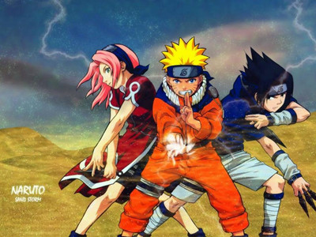
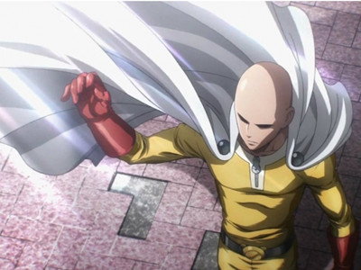
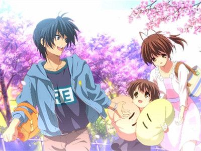

-

海贼王
《ONE PIECE》（海贼王、航海王）简称“OP”，是日本漫画家尾田荣一郎作画的少年漫画作品。在《周刊少年Jump》1997年34号开始连载。描写了拥有橡皮身体戴草帽的青年路飞，以成为“海贼王”为目标和同伴在大海展开冒险的故事。 -

火影忍者
《火影忍者》是日本漫画家岸本齐史的代表作，作品于1999年开始在《周刊少年JUMP》上连载，于2014 年11月10日发售的JUMP第50号完结。 -

一拳超人
《一拳超人》，又译《一击男》，是日本网络漫画家ONE的幽默格斗漫画，该作品以一个漫画原稿软件ComicStudio PC 制作，于2009年7月3日在ONE的个人网站开始连载，虽然画功粗糙，但却于日本网络大热，根据日本NHK2012年9月2日播出的“网络漫画革命”调查，《一拳超人》于该年观看总数超过1000万次，平均每天有高达20,000点击。现在持续于ONE的网站连载中。 -

Clannad AS
《CLANNAD～AFTER STORY～》是由京都动画根据Key社同名游戏《CLANNAD》改编的电视动画，也是电视动画《CLANNAD》的第2期作品。 -

银魂
银魂
《银魂》是由日本漫画家空知英秋创作的的一部连载中少年漫画作品，从2004年2号的《周刊少年Jump》开始连载。该作是以科幻时代剧为题材的搞笑漫画。以风格独特的毒舌、吐槽、无厘头、异想天开的恶搞，为作品的特色与卖点，同时不时穿插感人的故事，以及人生道理的描写。 -

未闻花名
《我们仍未知道那天所看见的花的名字》是由日本动画公司A-1 Pictures制作的原创电视动画，于2011年4月14日起在日本富士电视台的“noitaminA”节目播出，全11集。官方的简称为“那朵花”，在中国通常又被称为“未闻花名”。